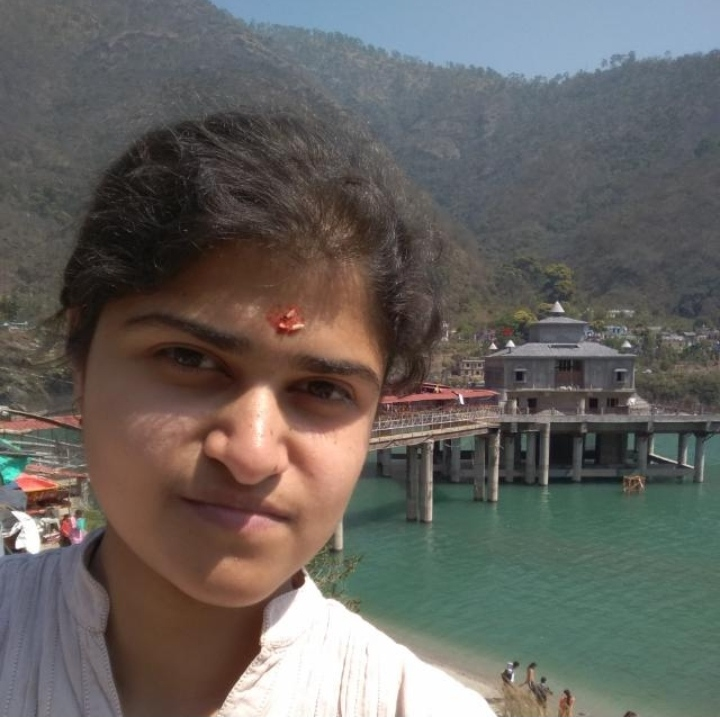

<p align='justify'>
  I am a PhD student in the <a href="https://cse.iith.ac.in/">Department of Computer Science & Engineering</a>, IIT Hyderabad, working on 
  Optimal Transport, under the guidance of <a href="https://www.iith.ac.in/~saketha/">Dr Saketha Nath Jagarlapudi</a>.
  <br><br>
  &nbsp;&nbsp;I joined IIT-H in Fall '18 as an MTech Research Assistant in <a href="https://lab1055.github.io/">Lab1055</a> advised by 
  <a href="https://www.iith.ac.in/~vineethnb/">Dr Vineeth N Balasubramanian</a> & converted to PhD in Fall '20. My Master's research was on Explainable Machine Learning 
  with a focus on formulating attribution algorithms for neural networks. 
  <br><br>&nbsp;&nbsp;Before joining IIT-H, I was an undergraduate student in the <a href="http://nituk.ac.in/cse/">Department of CSE</a>, NIT Uttarakhand(2014-2018). 
  Link to my <a href="https://drive.google.com/file/d/16FUqcUM0jN8sgMYpu7K-IuEliI4dMazU/view?usp=sharing">CV</a>.
  <br><br>&nbsp;&nbsp;I aspire to stay involved in Mathematical research throughout my life & also to help people realize their dreams. Hence, I want to 
  become a faculty of Theoretical Machine Learning at a university, where I get to guide passionate students.

